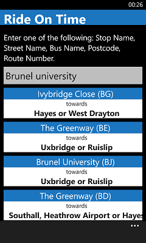
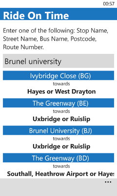
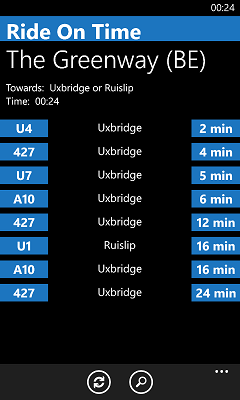
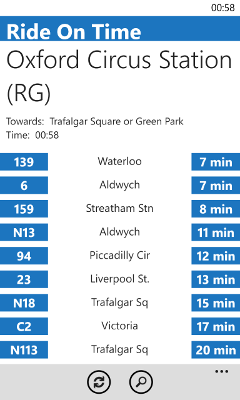
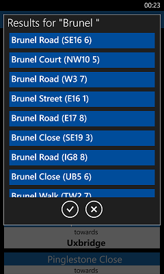
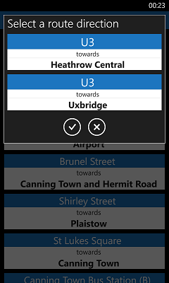
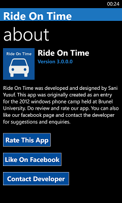

Ride On Time
London Bus Countdown
Application For Windows Phone
- 
- 
- 
- 
- 
- 
- 
Features
- Winner of 2012 Microsoft Windows Phone Incentives programme UK
- Displays nearby stops from current location
- Smart UI with black and white background support
- Powerful search tool for Buses and Stops with suggestions
- Accurate countdown information for all London Buses and Stops
Provides you with live and accurate information about all Buses and Stops in London. It even automatically shows you Stops around you.